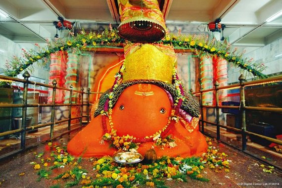

Situated on the Station Road in Nagpur, Shri Ganesh Mandir Tekri is a Hindu shrine dedicated to Lord Ganesha. The temple boasts of rich architecture; the idol of Ganesha can be seen seated under a tree inside the premises of the temple The busiest time of the day is during early morning or evening aartis.

Deeksha Bhuumi
A sacred monument of Navayana Buddhism: It holds immense significance for followers of this Buddhist sect.The largest Buddhist stupa in India: Standing 22 meters tall and 36 meters wide, the stupa symbolizes peace and enlightenment.
Raman Science Centre
The Raman Science Centre Nagpur is an interactive science center named after the famous Nobel Prize winning Indian physicist Chandrasekhara Venkata Raman. It is located on the bank of the Gandhi Sagar Lake and is a popular spot for visitors of all ages. The center was inaugurated in 1992 and the planetarium was added in 1997.
It is an ancient Hindu temple dedicated to Lord Rama.
It is located on a hilltop in Ramtek, about 50 kilometers from Nagpur.
The temple is believed to have been built in the 18th century by the Maratha ruler Raghuji Bhonsale.
The temple is known for its unique OM-shaped architecture.
It is a popular pilgrimage destination for Hindus.
Gorewada Zoo
it is one of the largest zoos in India and spans over 1914 hectares.It is popular for its safaris, including the Indian Safari, Leopard Safari, Bear Safari, and Tiger Safari You can also explore the zoo by foot through the Bio Park and Walk-in Trail The zoo is home to a wide variety of animals, including tigers, lions, leopards, bears, elephants, giraffes, zebras, and many more.